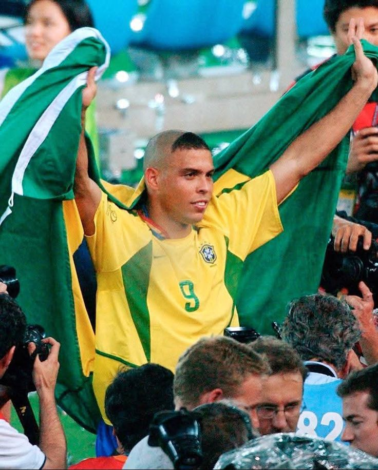

Ronaldo Fenômeno
O atacante que encantou o mundo com sua genialidade.
Ronaldo Luís Nazário de Lima é considerado um dos maiores atacantes da história do futebol. Conhecido mundialmente como Fenômeno, conquistou torcedores com sua velocidade, habilidade, força e capacidade impressionante de marcar gols.
Conheça sua história
A história de um fenômeno
De Bento Ribeiro para o topo do futebol mundial.

Nascido em 18 de setembro de 1976, no Rio de Janeiro, Ronaldo demonstrou desde cedo um talento extraordinário para o futebol.
Sua carreira profissional começou no Cruzeiro, onde rapidamente chamou a atenção do mundo esportivo. Suas atuações impressionantes abriram as portas para o futebol europeu.
Ao longo de sua trajetória, passou por grandes clubes como PSV, Barcelona, Internazionale, Real Madrid e Milan, construindo uma carreira marcada por gols, títulos e momentos inesquecíveis.
Mesmo enfrentando graves lesões, Ronaldo conseguiu retornar ao mais alto nível e protagonizou uma das maiores histórias de superação do esporte.
Clubes da carreira
Uma trajetória marcada por grandes camisas.
Cruzeiro
1993–1994
PSV
1994–1996
Barcelona
1996–1997
Inter
1997–2002
Real Madrid
2002–2007
Corinthians
2009–2011
Números e conquistas
Uma carreira construída com grandes feitos.
2
Copas do Mundo
3
Prêmios de Melhor do Mundo FIFA
2
Bolas de Ouro
15
Gols em Copas do Mundo
Um legado eterno
Ronaldo Fenômeno mostrou que talento e determinação podem superar até os maiores obstáculos. Sua história permanece viva na memória dos apaixonados por futebol.
Voltar para as lendas